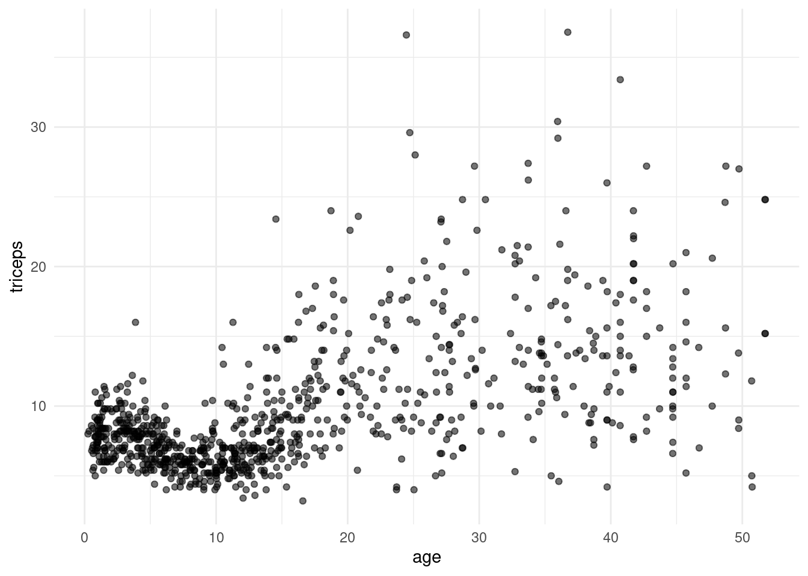
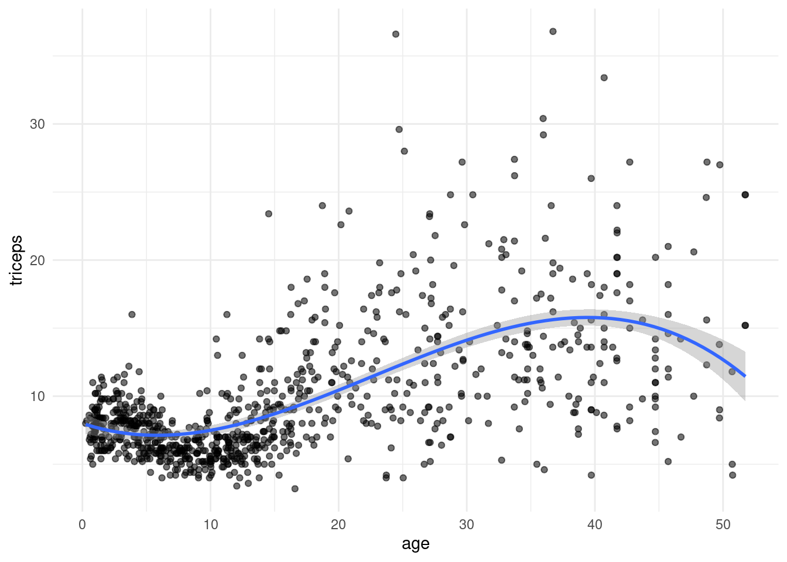
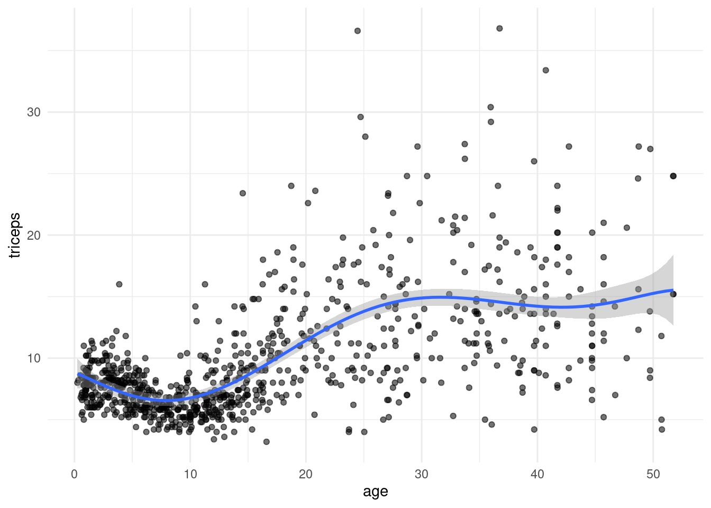
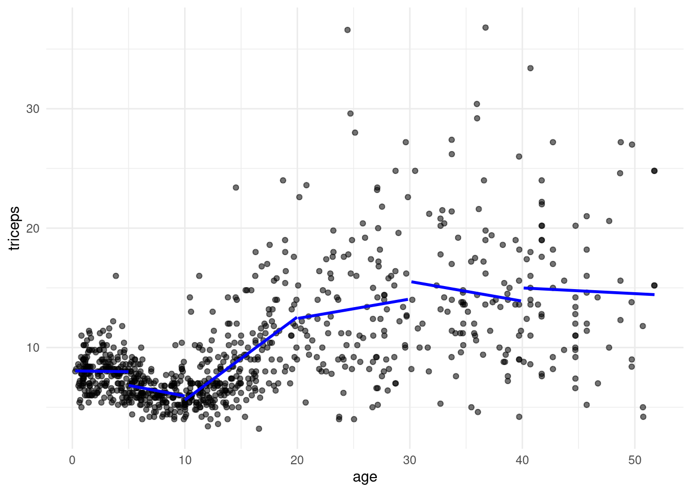
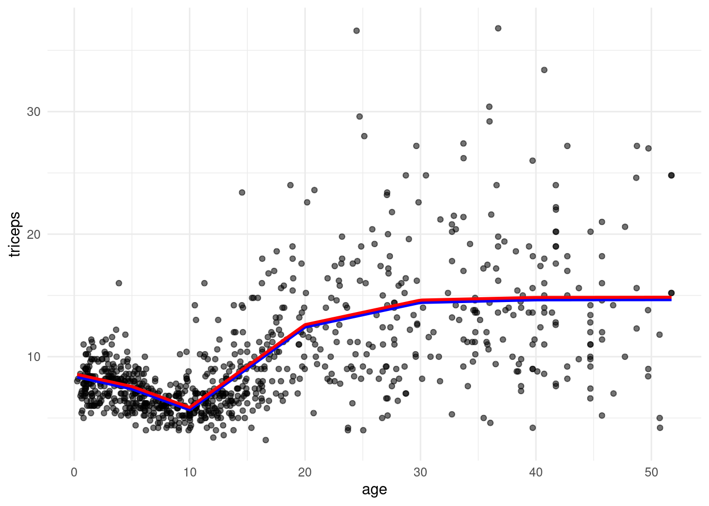
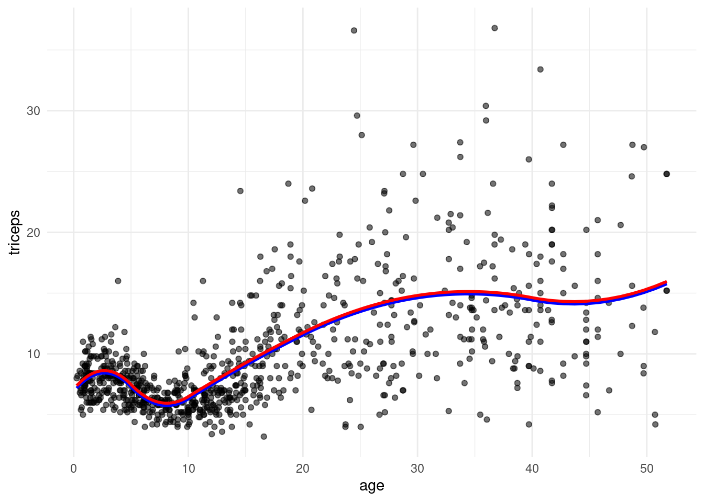
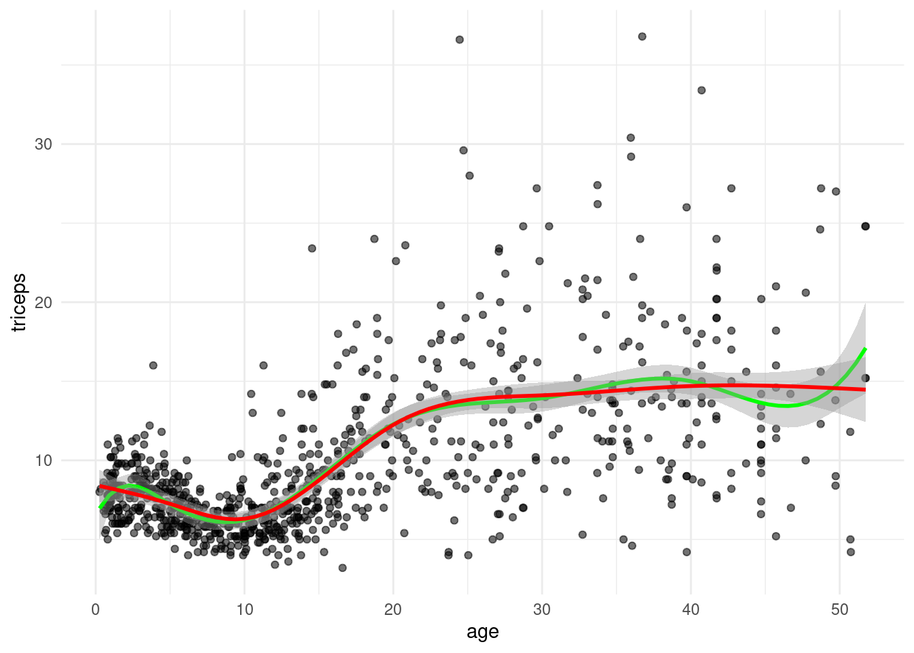
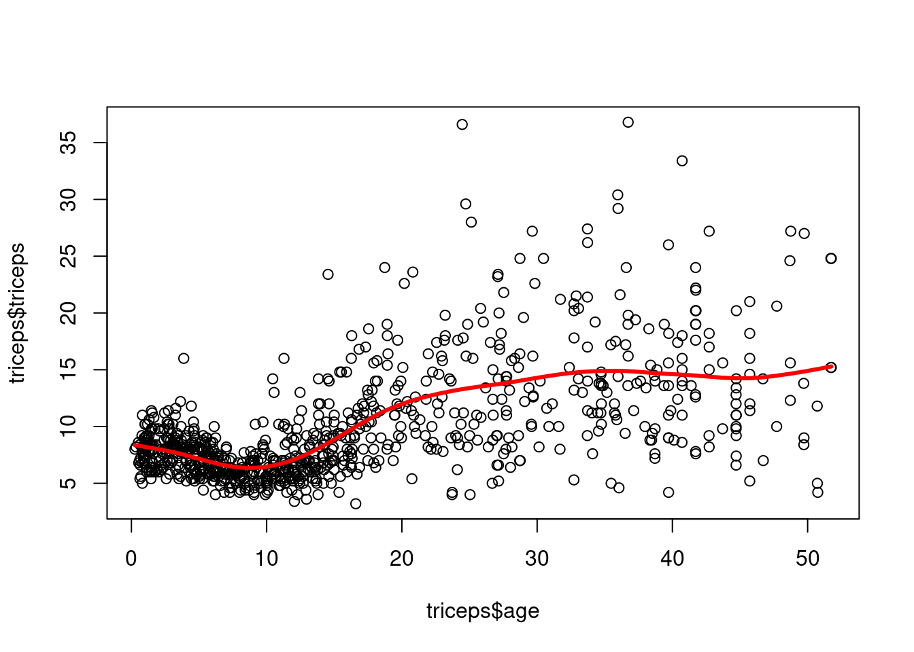
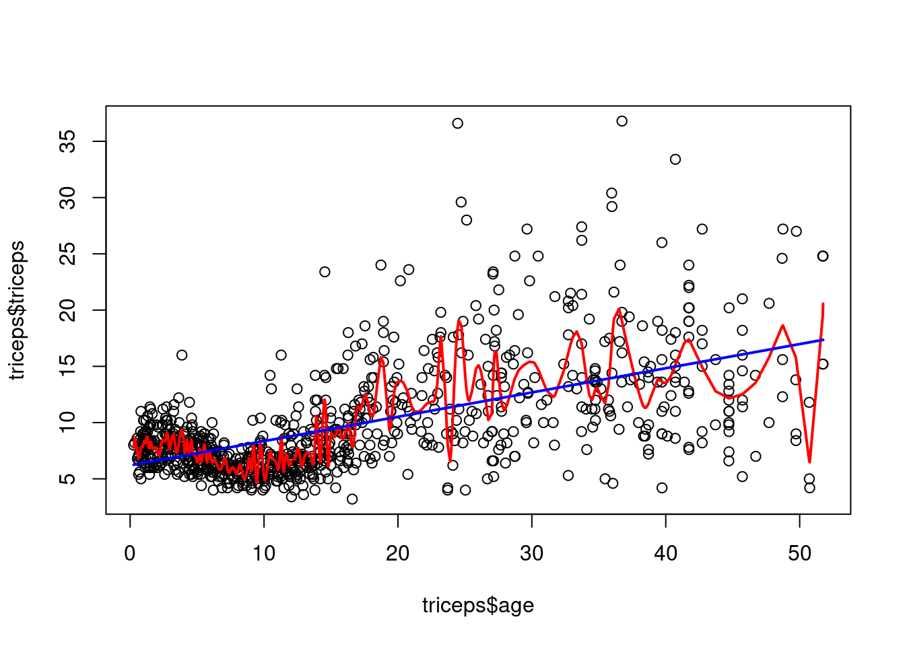
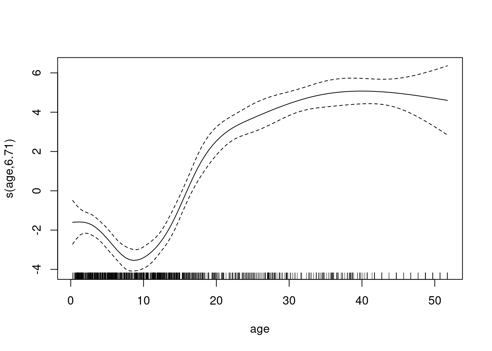

Example Data
Triceps skinfold thickness dataset: The data are derived from an anthropometric study of 892 females under 50 years in three Gambian villages in West Africa.
Code
library(MultiKink)
library(ggplot2)
library(psych)
Attaching package: 'psych'The following objects are masked from 'package:ggplot2':
%+%, alphaCode
data("triceps")
headTail(triceps)| age | lntriceps | triceps | |
|---|---|---|---|
| 1 | 12.05 | 1.22 | 3.4 |
| 2 | 9.91 | 1.39 | 4 |
| 3 | 10.04 | 1.44 | 4.2 |
| 4 | 11.49 | 1.44 | 4.2 |
| … | … | … | … |
| 889 | 7.91 | 1.92 | 6.8 |
| 890 | 7.99 | 1.44 | 4.2 |
| 891 | 14.63 | 2.2 | 9 |
| 892 | 30.14 | 2.1 | 8.2 |
Code
tri.age.plot <- ggplot(triceps, aes(x=age, y=triceps)) +
geom_point(alpha=0.55, color="black") +
theme_minimal()
tri.age.plot
Polynomial regression
Using poly() in lm():
Code
model.cubic.poly <- lm(triceps~poly(age,3,raw=TRUE),data=triceps)
## the same model:
## model.cubic <- lm(triceps~age + I(age^2) + I(age^3),
## data=triceps)
tri.age.plot +
stat_smooth(method = "lm",
formula = y~poly(x,3,raw=T), size = 1)Warning: Using `size` aesthetic for lines was deprecated in ggplot2 3.4.0.
ℹ Please use `linewidth` instead.
Cross-validation of different polynomials
RMSE for quadratic
Code
library(caret)Loading required package: latticeCode
set.seed(1234)
trC.lm <- trainControl(method = "repeatedcv",
number = 10,
repeats = 10)
pol.model <- train(triceps ~ poly(age,3),
data = triceps,
method = "lm",
trControl = trC.lm)
pol.model$results[2]| RMSE |
|---|
| 3.866 |
RMSE for different degrees
Code
my.pol.f <- function(x){
xx<-poly(triceps$age, x, raw=T)
new.data <- cbind(triceps=triceps$triceps, xx)
pol.model <- train(triceps~., data = new.data,method = "lm")
RMSE.cv = pol.model$results[2]
}
t(sapply(1:10, my.pol.f)) RMSE RMSE RMSE RMSE RMSE RMSE RMSE RMSE RMSE RMSE
[1,] 3.985 4.083 3.83 3.776 3.787 3.741 3.847 3.803 3.867 3.804Code
tri.age.plot +
stat_smooth(method = "lm",
formula = y~poly(x,6,raw=T), size = 1)
Piecewise linear regression
Instead of fitting a high-degree polynomial over the entire range of \(X\), piecewise polynomial regression involves fitting separate low-degree polynomials over different regions of \(X\). For example, a piecewise cubic polynomial works by fitting a cubic regression model of the form
\[Y_i=\beta_0+\beta_1x_i+\beta_2x_i^2+\beta_3x_i^3+\epsilon_i,\]
where the coefficients differ in different parts of the range of \(X\). The points where the coefficients change are called knots \(\xi_k\), \(k=1,\dots,K\).
Let us begin with a piecewise linear (degree=1):
Code
pred1 <- predict(lm(triceps~age,
data = triceps[triceps$age<5,]))
pred2 <- predict(lm(triceps~age,
data = triceps[triceps$age >=5 & triceps$age<10,]))
pred3 <- predict(lm(triceps~age,
data = triceps[triceps$age>=10 & triceps$age<20,]))
pred4 <- predict(lm(triceps~age,
data = triceps[triceps$age>=20 & triceps$age<30,]))
pred5 <- predict(lm(triceps~age,
data = triceps[triceps$age>=30 & triceps$age<40,]))
pred6 <- predict(lm(triceps~age,
data = triceps[triceps$age>=40,]))
tri.age.plot +
geom_line(data=triceps[triceps$age<5,],
aes(y = pred1, x=age), size = 1, col="blue") +
geom_line(data=triceps[triceps$age >=5 & triceps$age<10,],
aes(y = pred2, x=age), size = 1, col="blue") +
geom_line(data=triceps[triceps$age>=10 & triceps$age<20,],
aes(y = pred3, x=age), size = 1, col="blue") +
geom_line(data=triceps[triceps$age>=20 & triceps$age<30,],
aes(y = pred4, x=age), size = 1, col="blue") +
geom_line(data=triceps[triceps$age>=30 & triceps$age<40,],
aes(y = pred5, x=age), size = 1, col="blue") +
geom_line(data=triceps[triceps$age>=40,],
aes(y = pred6, x=age), size = 1, col="blue")
Continuous piecewise linear regression
We want a continuous function. Let us define a truncated power basis function (here of degree=1) per knot \(\xi\),
\[h(x, \xi)=(x-\xi)^1_{+}= \begin{cases} x-\xi, \text{\,if\,} x>\xi\\ 0, \text{\,else}. \end{cases} \]
The continuous piecewise regression equation is
\[Y_i=\beta_0+\beta_1x_i+\beta_2 h(x_i,5)+\cdots+\beta_6 h(x_i,40) + \epsilon_i\]
This can be done -by hand- or with B-splines splines::bs()
Code
pred7 <- predict(lm(triceps~ age + I((age-5)*(age>=5)) +
I((age-10)*(age >= 10)) +
I((age-20)*(age >= 20)) +
I((age-30)*(age >= 30)) +
I((age-40)*(age >= 40)),
data = triceps))
library(splines)
pred.lm.bs <- predict(lm(triceps ~ bs(age, knots = c(5,10,20,30,40),degree=1), data=triceps))
tri.age.plot +
geom_line(data=triceps,
aes(y = pred.lm.bs, x=age), size = 1, col="blue")+
geom_line(data=triceps,
aes(y = pred7+.2, x=age), size = 1, col="red")
Splines
Quadratic spline
With
\[h(x, \xi)=(x-\xi)_{+}^2= \begin{cases} (x-\xi)^2, \text{\,if\,} x>\xi\\ 0, \text{\,else}, \end{cases} \]
we have as regression equation \[Y_i=\beta_0+\beta_1x_i+\beta_2x_i^2+\beta_3 h(x_i,5)+\cdots+\beta_7 h(x_i,40) + \epsilon_i\]
Code
pred.quadsmooth <- predict(lm(triceps~ age + I(age^2) +
I((age-5)^2*(age>=5)) +
I((age-10)^2*(age>=10)) +
I((age-20)^2*(age>=20)) +
I((age-30)^2*(age>=30)) +
I((age-40)^2*(age>=40)),
data = triceps))
pred.quadsmooth2 <- predict(lm(triceps ~ bs(age, knots = c(5,10,20,30,40),degree=2), data=triceps))
tri.age.plot +
geom_line(data=triceps,
aes(y = pred.quadsmooth, x=age), size = 1, col="blue")+
geom_line(data=triceps,
aes(y = pred.quadsmooth2+.2, x=age), size = 1, col="red")
Cubic Spline
Most often, cubic splines are used. Adding the following truncated power basis function per knot,
\[h(x, \xi)=(x-\xi)_{+}^3= \begin{cases} (x-\xi)^3, \text{\,if\,} x>\xi\\ 0, \text{\,else}, \end{cases} \]
to the model for a cubic polynomial will lead to a discontinuity in only the third derivative at \(\xi\); the function will remain continuous, with continuous first and second derivatives, at each of the knots:
\[Y_i=\beta_0+\beta_1x_i+\beta_2x_i^2+\beta_3x_i^3+\beta_4h(x_i,5)+\cdots+\beta_8h(x_i,40) + \epsilon_i\]
One can show that a cubic spline has \(K+4\) parameters.
Natural Spline
Natural splines have an additional restriction that the fitted curve linear at the extremes, splines::ns()
Code
cub.splines.bs <- lm(triceps ~ bs(age, knots = c(5,10,20,30,40)), data=triceps)
cub.splines.ns <- lm(triceps ~ ns(age, knots = c(5,10,20,30,40)), data=triceps)Code
tri.age.plot <- ggplot(triceps, aes(x=age, y=triceps)) +
geom_point(alpha=0.55, color="black") +
theme_minimal()
tri.age.plot +
stat_smooth(method = "lm",
formula = y~bs(x,knots = c(5,10,20,30,40)),
lty = 1, col = "green") +
stat_smooth(method = "lm",
formula = y~ns(x,knots = c(5,10,20,30,40)),
lty = 1, col = "red")
Smoothing splines
Avoids the knot selection problem completely by using a maximal set of knots. The complexity of the fit is controlled by regularization. Problem: among all functions \(f(x)\) with two continuous derivatives, find one that minimizes the penalized residual sum of squares
\[ RSS(f,\lambda)=\sum_{i=1}^N(y_i-f(x_i))^2+\lambda[f''(t)]^2dt \tag{1}\]
where \(\lambda\) is a fixed smoothing parameter. The first term measures closeness to the data, while the second term penalizes curvature in the function, and \(\lambda\) establishes a tradeoff between the two. Special cases: \(\lambda=0\) (no constraint on \(f\)) and \(\lambda=\infty\) (\(f\) has to be linear).
The function \(f(x)\) that minimizes (Equation 1) can be shown to have some special properties: it is a piecewise cubic polynomial with knots at the unique values of \(x_1,\dots,x_n\) and continuous first and second derivatives at each knot. Furthermore, it is linear in the region outside of the extreme knots. In other words, the function \(f(x)\) that minimizes (Equation 1) is a natural cubic spline with knots at \(x_1,\dots,x_n\) ! However, it is not the same natural cubic spline that one would get if one applied the basis function approach described above – rather, it is a shrunken version of such a natural cubic spline, where the value of the tuning parameter \(\lambda\) in (Equation 1) controls the level of shrinkage.
Smoothing splines are implemented in smooth.spline().
\(\lambda\) determined with cross-validation
Code
sspline <- smooth.spline(x=triceps$age, y=triceps$triceps, cv=TRUE)Warning in smooth.spline(x = triceps$age, y = triceps$triceps, cv = TRUE): cross-validation with non-unique 'x' values seems doubtfulCode
plot(triceps$age, triceps$triceps)
lines(sspline, lwd=3,col="red")
The extremes: no smooth and max smooth
Code
ssplineNosmooth <- smooth.spline(x=triceps$age, y=triceps$triceps, lambda=0)
ssplineMaxsmooth <- smooth.spline(x=triceps$age, y=triceps$triceps, lambda=100)
plot(triceps$age, triceps$triceps)
lines(ssplineNosmooth, lwd=2,col="red")
lines(ssplineMaxsmooth, lwd=2,col="blue")
Generalized additive model
Using mgcv::gam()
Code
library(mgcv)Loading required package: nlmeThis is mgcv 1.9-4. For overview type '?mgcv'.Code
gamtri<-gam(triceps~s(age,bs="cr"),data=triceps)
summary(gamtri)
Family: gaussian
Link function: identity
Formula:
triceps ~ s(age, bs = "cr")
Parametric coefficients:
Estimate Std. Error t value Pr(>|t|)
(Intercept) 9.702 0.126 77.3 <2e-16
Approximate significance of smooth terms:
edf Ref.df F p-value
s(age) 6.71 7.54 85.6 <2e-16
R-sq.(adj) = 0.419 Deviance explained = 42.3%
GCV = 14.18 Scale est. = 14.057 n = 892Code
plot(gamtri)